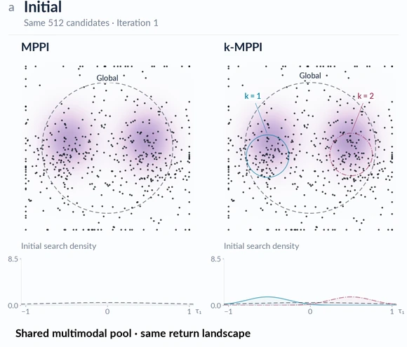
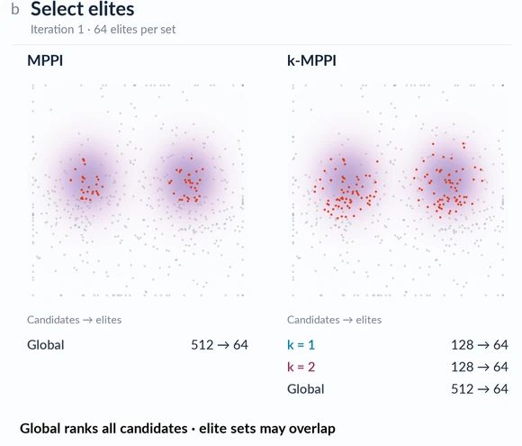
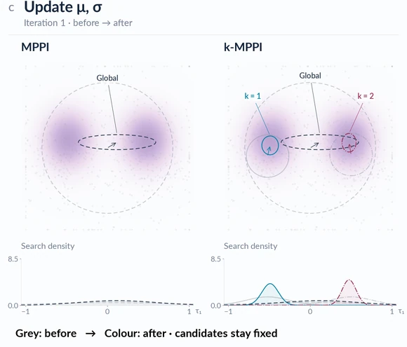
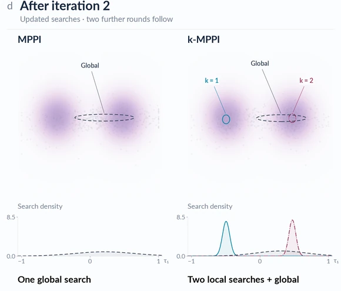
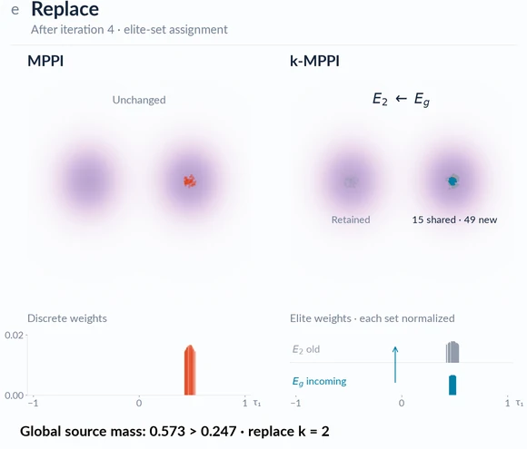
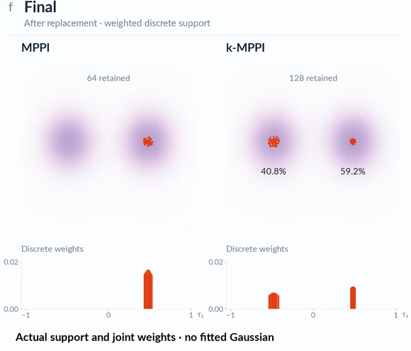

01Planning mechanics
k-MPPI Visualization
This demo shows how k-MPPI maintains multiple search modes through local refinement and global exploration.
Jump to section ↘MPPI uses one global search. k-MPPI combines local refinement and global exploration to maintain multiple search modes.

The illustration starts from the same pool of 512 candidates on a shared two-mode return landscape. MPPI uses one global search distribution; k-MPPI maintains two local searches alongside a global search.
The contours and lower marginal-density plots describe the search distributions. They are not the final weighted proposal.

MPPI selects 64 elites from the global pool of 512 candidates. In k-MPPI, each local search selects 64 elites from its 128 candidates, while the global search ranks all 512 candidates and also retains 64.
These elite sets may overlap. The global ranking reuses the shared pool; it does not introduce an additional pool of 512 rollouts.

The selected elites guide updates to the means and standard deviations of the search Gaussians. Grey contours show the distributions before the update; colored contours show them afterward.
The candidate locations remain fixed in this panel. The changing contours and marginal densities isolate how the global and local searches are refined.

After two refinement iterations, k-MPPI's local searches remain concentrated around distinct high-return regions, while its global search covers a broader region. MPPI continues with one global search.
This is an intermediate snapshot. Two further refinement iterations follow before elite-set replacement, completing M = 4 iterations in this illustration.

After the fourth iteration, the global source has greater mass than the matched second local source in this example (0.573 versus 0.247). The global elite set is therefore assigned to the second local slot, while the first local set is retained.
The old and incoming sets share 15 samples; 49 samples are new to that slot. This panel shows elite-set replacement, not another Gaussian-fitting step. The two weight lanes are normalized separately for comparison.

The final display shows the retained samples and their joint weights: 64 samples for MPPI and 128 for k-MPPI. In this example, k-MPPI preserves both return modes, with 40.8% and 59.2% of the total weight.
This is a weighted discrete proposal, not a fitted Gaussian. The lower plots show sample weights, whereas the earlier lower plots show search densities.
2D mechanism illustration · K = 2 · M = 4
SWAN is compared with BMPC, the best-performing baseline, on figure-8 and straight-line tracking tasks for simulated Unitree Go2 and G1 robots.
The same planning framework transfers to physical control, producing stable velocity-tracking locomotion under a high-frequency control loop.